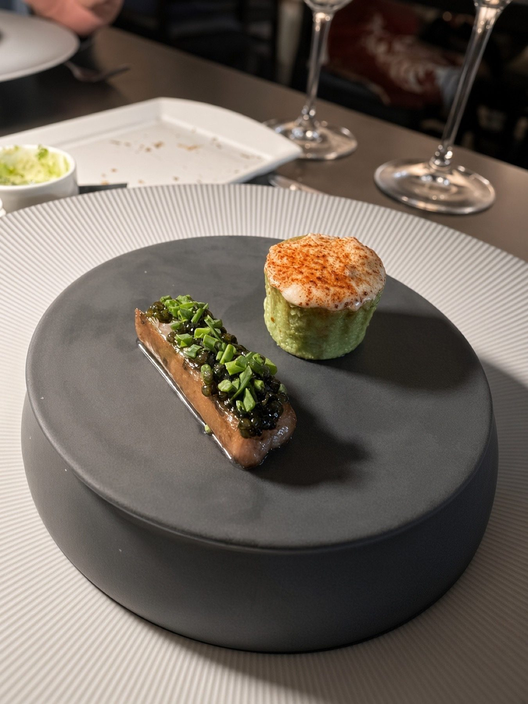
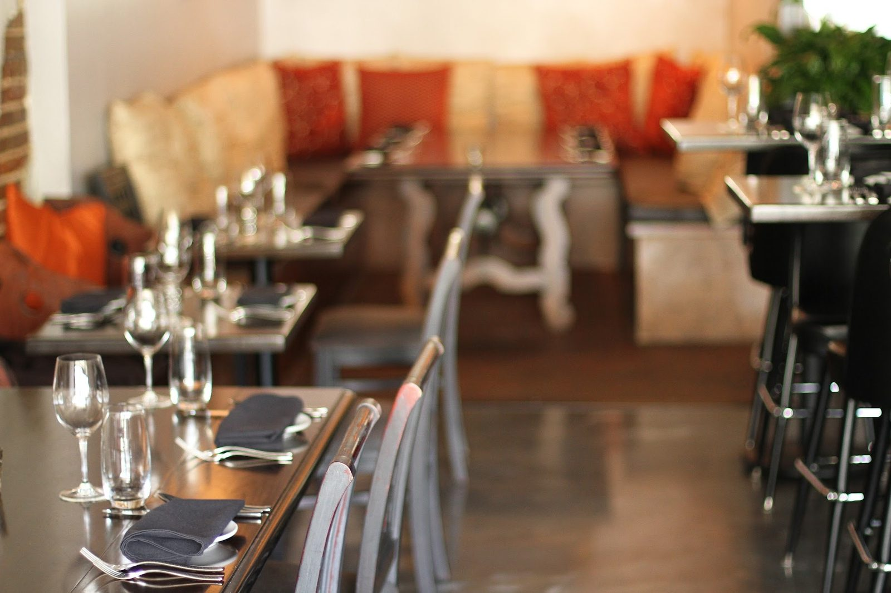
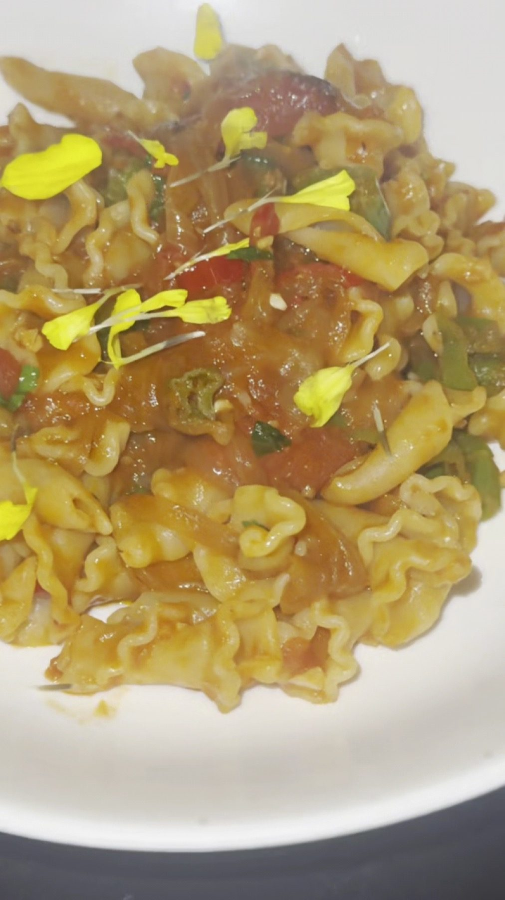
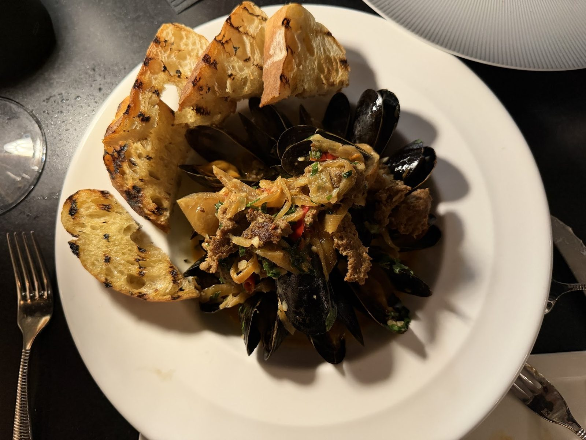
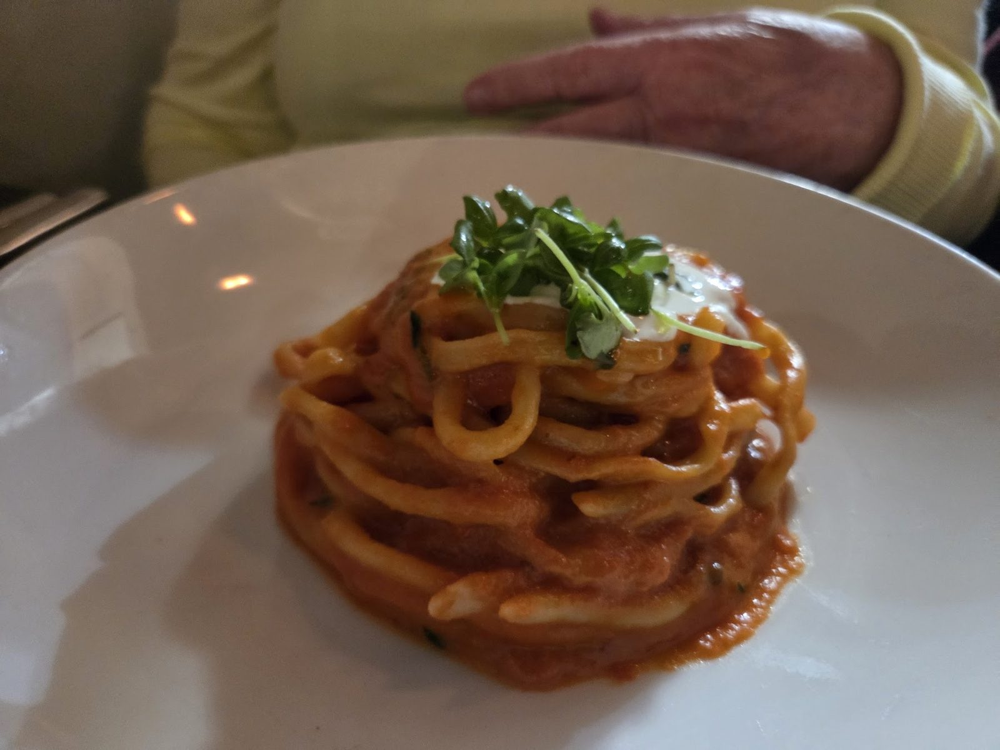
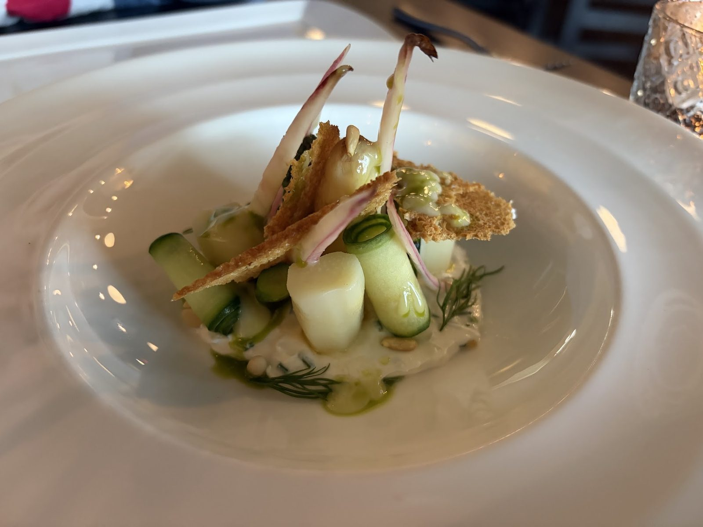
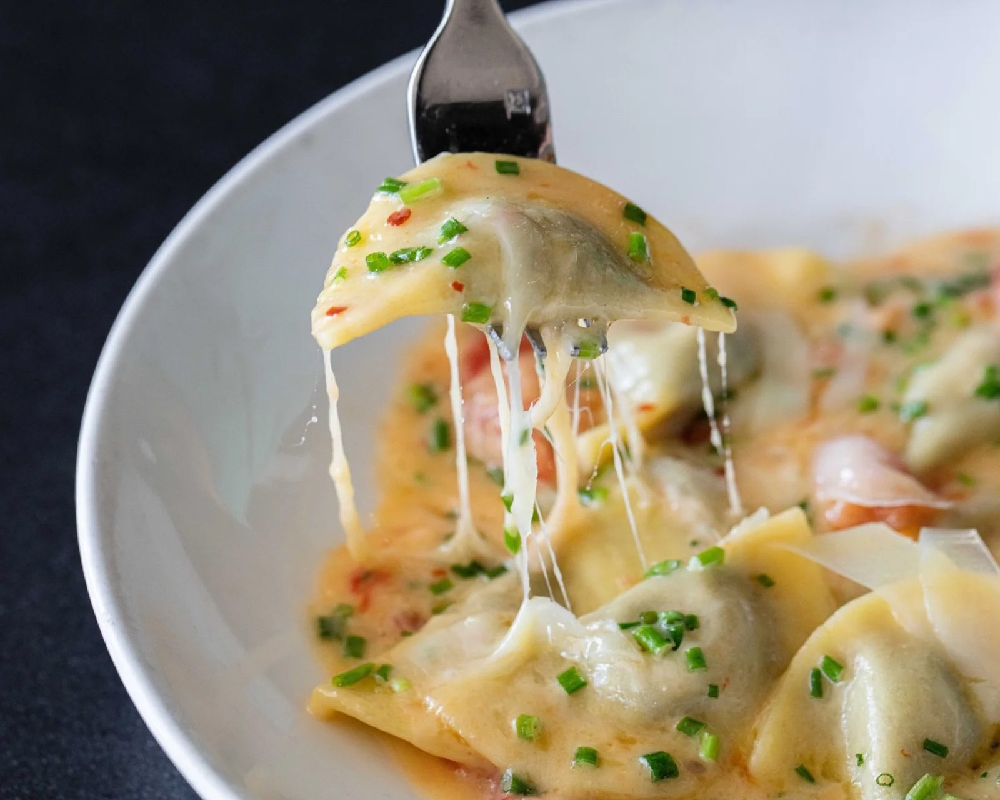
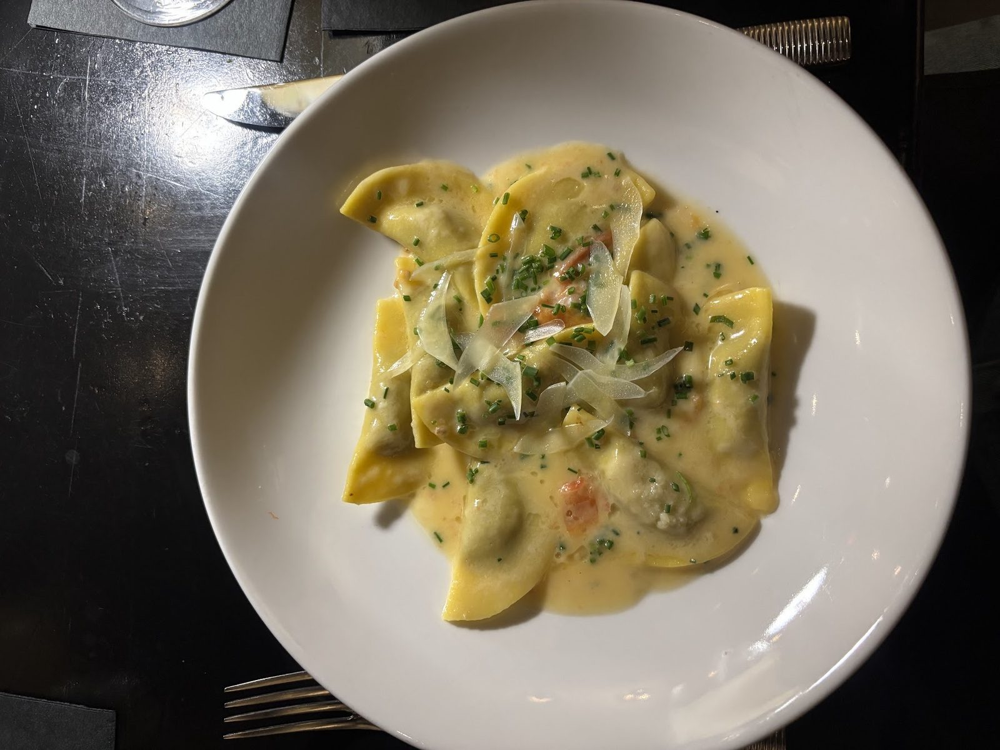
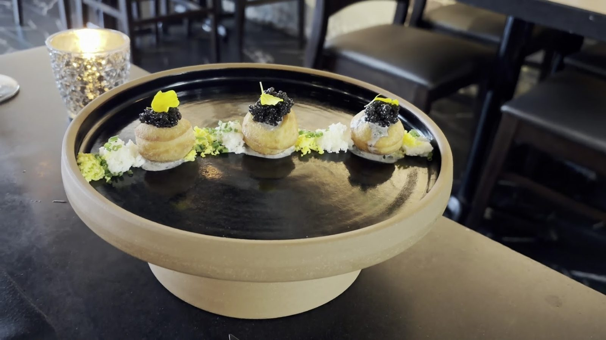

Starters
Heirloom carrots, steamed mussels, hog head terrine and venison tartare.
Italian restaurant · St. Petersburg, FL

Hours Mon · 5–9:30 PMTue · 5–9:30 PMWed · 5–9:30 PMThu · 5–9:30 PMFri · 5–10:30 PMSat · 5–10:30 PMSun · 5–9 PM
449 Central Ave #101st, St. Petersburg, FL 33701
Pasta, small plates and a Chef's Bar. Dinner nightly from 5 PM.
On the menu

Heirloom carrots, steamed mussels, hog head terrine and venison tartare.

Short rib mezzaluna, bucatini pomodoro, pork campanelle and rabbit tagliatelle.

Eight to nine courses off the dining menu, seated at the open kitchen. $275 per person, exclusive of beverages and taxes.






4.6 ★ · 947 Google reviews
Tonight we chose this restaurant to celebrate my daughter's birthday, and we were incredibly lucky to have Dan serve us. His service was impeccable in every detail; for example, he even changed my napkin to white because I was wearing a white dress. He also explained the menu to us in great detail, and we loved all the dishes he recommended. I especially loved their desserts!
Third time to Il Ritorno last night to celebrate our son’s birthday and it was once again outstanding! Each visit has been consistently fabulous for food and service. The four of us made our own tasting menu and we just loved every dish. We started with caviar doughnuts. Loved them! Will have to try this at home when we do caviar. The Pork Campanelle and the crab pasta were so delicious.
Had a lovely family dinner here back in February. The service was stellar despite a large party with a toddler coming in at peak dinner time. We all enjoyed the presentation and plating. Some dishes came deconstructed with lots of little bowls while others had fun elements on the plate. This kept each experience fresh and interactive!

Our story
Il Ritorno means “The Return” in Italian, and marks owner and chef David Benstock's homecoming.
Sheridan Scott is chef de cuisine. Joe Adams manages the bar and dining room.
Visit
449 Central Ave #101st, St. Petersburg, FL 33701
Business casual: no beach attire, jerseys, athletic shorts, tennis shoes or flip-flops. Tables held 20 minutes.